1 Overview and objectives
In this project I looked at two pretrained models using the same 20 photographs. I didn't train or fine-tune either model. Both of them are used with their fixed public weights, in evaluation mode and with gradients turned off.
- Part 1: a pretrained Vision Transformer. Using torchvision's
vit_b_16with theViT_B_16_Weights.IMAGENET1K_V1checkpoint, I wrote my own patch extraction, looked at how an image turns into a sequence of tokens, and evaluated the model's 1,000-class ImageNet predictions. - Part 2: CLIP for image–text matching. Using OpenAI CLIP
ViT-B/32, I implemented the image–text similarity calculation step by step and checked it against the model's built-in output. I also compared three prompt templates for zero-shot classification and looked at how similar CLIP's image embeddings are to each other.
All the numbers on this page come from the experiments I actually ran. When a result is extra and not required by the assignment, I labeled it supplementary.
2 Dataset and category definitions
The collection has 20 photographs, four for each of five classes from the ImageNet-1k label list. I used the class order below for every table, confusion matrix and list of CLIP candidate texts.
| Category | ImageNet index | Checkpoint label (ViT) | Text label (CLIP) | Images |
|---|---|---|---|---|
| Golden retriever | 207 | golden retriever | golden retriever | 4 |
| Tabby cat | 281 | tabby | tabby cat | 4 |
| Sports car | 817 | sports car | sports car | 4 |
| Mountain bike | 671 | mountain bike | mountain bike | 4 |
| Coffee mug | 504 | coffee mug | coffee mug | 4 |
For ViT I kept the checkpoint's exact label for class 281, which is tabby, but for CLIP I used tabby cat because it's a clearer phrase. I checked the label mapping against weights.meta["categories"] of the installed checkpoint.
Sources and permissions. All the images come from Wikimedia Commons under CC0, public-domain, CC BY or CC BY-SA licenses (the full attribution is in Section 12). I picked them so the viewpoint, background, lighting and composition would vary, for example a dog standing in a lake, a cat on snow, the rear view of a car, three riders on a mountain, and a mug held outdoors. I looked at each image to make sure its main object actually matches its class. For two of the golden retriever photos, the breed comes from the uploader's file title. The dogs look consistent with the breed, but I didn't verify this independently. Every original file was downloaded without changes, checked against the SHA-1 checksum published by Commons, and recorded with its SHA-256 checksum, source page, creator and license.
3 Computing environment and model checkpoints
| Computer | Dell G15 5511, Ubuntu 26.04.1 LTS (Linux 7.0.0-38-generic) |
|---|---|
| CPU / RAM | Intel Core i7-11800H, 14 GiB |
| GPU | NVIDIA GeForce RTX 3050 Laptop GPU, 4 GiB, compute capability 8.6; driver 595.91.07 |
| Python / package manager | Python 3.12.15, uv 0.13.1 (all versions pinned in a lock file) |
| PyTorch / torchvision | 2.13.0+cu130 / 0.28.0+cu130 (CUDA runtime 13.0, cuDNN 9.20) |
| OpenAI CLIP | 1.0, GitHub commit d05afc436d78f1c48dc0dbf8e5980a9d471f35f6 |
| Other libraries | NumPy 2.5.4, pandas 3.0.6, Matplotlib 3.11.2, scikit-learn 1.9.1, Pillow 13.0.0 |
| Property | Part 1: ViT-B/16 | Part 2: CLIP ViT-B/32 |
|---|---|---|
| Loading | torchvision.models.vit_b_16 | clip.load("ViT-B/32") |
| Checkpoint | ViT_B_16_Weights.IMAGENET1K_V1 (vit_b_16-c867db91.pth) | OpenAI ViT-B-32.pt |
| Parameters | 86,567,656 | 151,277,313 (image + text encoders) |
| Patches / tokens | 16×16 → 196 patch tokens + CLS | 32×32 → 49 patch tokens + CLS |
| Training data | ImageNet-1k (≈1.28 M labeled images) | 400 M image–text pairs |
| Training objective | supervised cross-entropy over 1,000 classes | contrastive image–text matching |
| Preprocessing | weights.transforms(): resize shorter side to 256 (bilinear), center-crop 224, normalize with mean (0.485, 0.456, 0.406), std (0.229, 0.224, 0.225) | official CLIP transform: resize shorter side to 224 (bicubic), center-crop 224, normalize with mean (0.4815, 0.4578, 0.4082), std (0.2686, 0.2613, 0.2758) |
| Precision used | FP32 | native FP16 checked; FP32 used for the experiments (Section 6) |
| Device / batching | CUDA GPU (CPU fallback supported). The 20 images are processed as a single batch of 20; CLIP image embeddings are computed once and cached on disk. | |
Both pipelines use a center crop, which means the models don't see the far sides of wide photographs or the top and bottom of tall photographs.
4 ViT patch visualization and model inputs
Dividing an image into patches
I wrote my own patch-extraction function that only uses tensor reshaping. An image of shape (3, 224, 224) is reshaped to (3, 14, 16, 14, 16), then the axes are reordered to (14, 14, 3, 16, 16), and then the result is flattened to (196, 3, 16, 16). With patch size P = 16,
The patches are numbered in row-major order (patch k is in row ⌊k/14⌋ and column k mod 14), and each one has 3 × 16 × 16 = 768 raw pixel values. I also wrote automated tests that check the shapes, the ordering, that the image can be rebuilt exactly from its patches, and that every pixel belongs to exactly one patch.
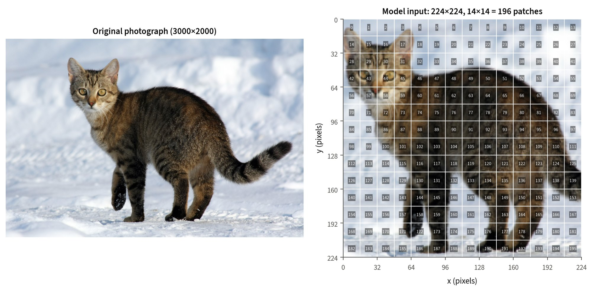

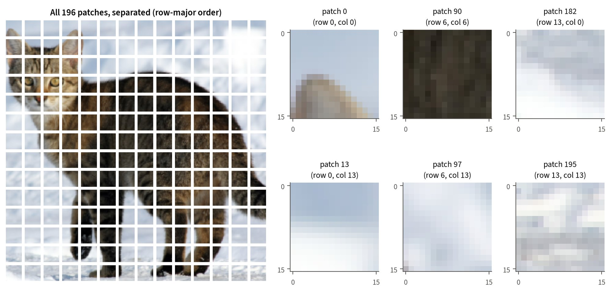

From patches to the 197-token sequence
The patch grid above doesn't contain anything learned. Inside the pretrained model, there are three learned parts that turn the patches into the encoder's input:
- Patch projection. Each flattened patch xp ∈ ℝ768 gets mapped to a D = 768-dimensional embedding zp = W xp + b, where W ∈ ℝ768×768 is learned. torchvision does this with a convolution that has a kernel size and stride of 16, which is basically the same linear map applied to every non-overlapping patch.
- CLS token. A learned vector is put in front of the 196 patch tokens, which gives 196 + 1 = 197 tokens. It doesn't contain any pixels. Through self-attention it collects information from all the patches, and its final state is the only thing that goes into the classification head.
- Positional embeddings. Self-attention by itself treats its input like an unordered set, so a learned matrix Epos ∈ ℝ197×768 (one row per position, including the CLS position) is added to tell the encoder where each token came from.
| Stage | Shape | Learned? |
|---|---|---|
| Raw patches (my function) | (196, 3, 16, 16) | no |
| Flattened patches (my function) | (196, 768) | no |
| Patch embeddings (projection) | (1, 196, 768) | yes |
| + CLS token | (1, 197, 768) | yes |
| + positional embeddings = encoder input | (1, 197, 768) | yes |
Manual patches vs. learned projection. To connect these two things, I multiplied my manually extracted, flattened patches by the model's projection weights. The result matches the model's own patch embeddings with a maximum absolute difference of 4.3×10−6, which is just floating-point rounding. The patch length 3·16·16 = 768 and the model width D = 768 are only equal for ViT-B/16 by coincidence, and they're actually different quantities.
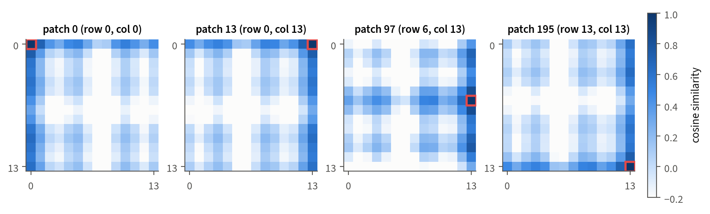

5 ViT classification results
I preprocessed all 20 images with weights.transforms() and passed them through the model as one batch. This gives a 20 × 1000 matrix of logits, and a softmax turns them into probabilities over all 1,000 ImageNet classes. For every image I recorded the top-5 classes and probabilities, the predicted ImageNet label, and the probability and rank of the correct class.
| Metric | Value |
|---|---|
| Top-1 accuracy | 85% (17 / 20) |
| Top-5 accuracy | 100% (20 / 20) |
| Top-1 by class | golden retriever 4/4 · tabby 2/4 · sports car 4/4 · mountain bike 4/4 · coffee mug 3/4 |
| Supplementary: argmax restricted to the five classes | 100% (20 / 20), a different and easier question, not the required metric |
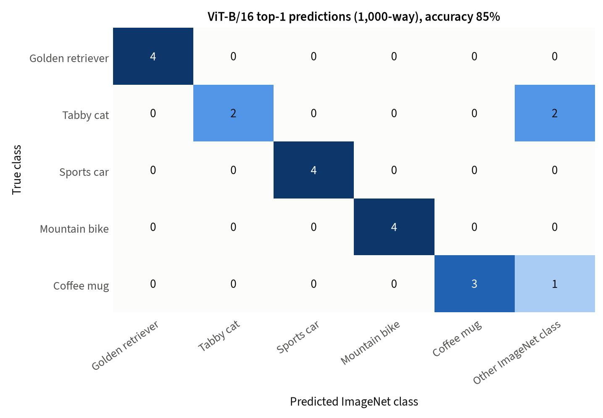
Egyptian cat (twice) and cup. Full-size image
| Image | Top-1 | Top-2 | Top-3 | Top-4 | Top-5 |
|---|---|---|---|---|---|
| golden_retriever_01 | golden retriever (0.890) | Labrador retriever (0.007) | tennis ball (0.002) | Airedale (0.001) | Sussex spaniel (0.001) |
| golden_retriever_02 | golden retriever (0.865) | Irish setter (0.010) | Sussex spaniel (0.005) | curly-coated retriever (0.004) | cocker spaniel (0.003) |
| golden_retriever_03 | golden retriever (0.888) | Norfolk terrier (0.007) | Irish terrier (0.006) | Chesapeake Bay retriever (0.004) | Rhodesian ridgeback (0.003) |
| golden_retriever_04 | golden retriever (0.863) | cocker spaniel (0.009) | Chesapeake Bay retriever (0.003) | vizsla (0.003) | clumber (0.003) |
| tabby_cat_01 | incorrect: Egyptian cat (0.894) | tabby (0.018) | tiger cat (0.013) | lynx (0.001) | Siamese cat (0.001) |
| tabby_cat_02 | incorrect: Egyptian cat (0.581) | tabby (0.173) | tiger cat (0.159) | lynx (0.003) | alp (0.000) |
| tabby_cat_03 | tabby (0.335) | tiger cat (0.288) | Egyptian cat (0.220) | lynx (0.001) | velvet (0.000) |
| tabby_cat_04 | tabby (0.483) | Egyptian cat (0.252) | tiger cat (0.142) | lynx (0.004) | Siamese cat (0.001) |
| sports_car_01 | sports car (0.910) | convertible (0.010) | car wheel (0.009) | racer (0.007) | grille (0.004) |
| sports_car_02 | sports car (0.798) | grille (0.089) | convertible (0.012) | racer (0.005) | car wheel (0.003) |
| sports_car_03 | sports car (0.541) | car wheel (0.297) | racer (0.016) | convertible (0.008) | beach wagon (0.008) |
| sports_car_04 | sports car (0.391) | convertible (0.263) | car wheel (0.098) | beach wagon (0.037) | grille (0.014) |
| mountain_bike_01 | mountain bike (0.907) | disk brake (0.005) | bicycle-built-for-two (0.002) | crash helmet (0.001) | sleeping bag (0.001) |
| mountain_bike_02 | mountain bike (0.873) | disk brake (0.006) | crash helmet (0.002) | sleeping bag (0.001) | bicycle-built-for-two (0.001) |
| mountain_bike_03 | mountain bike (0.859) | disk brake (0.013) | bicycle-built-for-two (0.003) | sleeping bag (0.002) | tripod (0.002) |
| mountain_bike_04 | mountain bike (0.849) | alp (0.043) | bicycle-built-for-two (0.009) | valley (0.001) | sleeping bag (0.001) |
| coffee_mug_01 | coffee mug (0.890) | cup (0.034) | espresso (0.013) | eggnog (0.001) | chocolate sauce (0.001) |
| coffee_mug_02 | coffee mug (0.578) | espresso (0.129) | cup (0.067) | consomme (0.017) | whiskey jug (0.015) |
| coffee_mug_03 | incorrect: cup (0.328) | coffee mug (0.263) | espresso (0.040) | acorn (0.013) | hermit crab (0.009) |
| coffee_mug_04 | coffee mug (0.729) | cup (0.133) | espresso (0.034) | consomme (0.003) | chocolate sauce (0.003) |
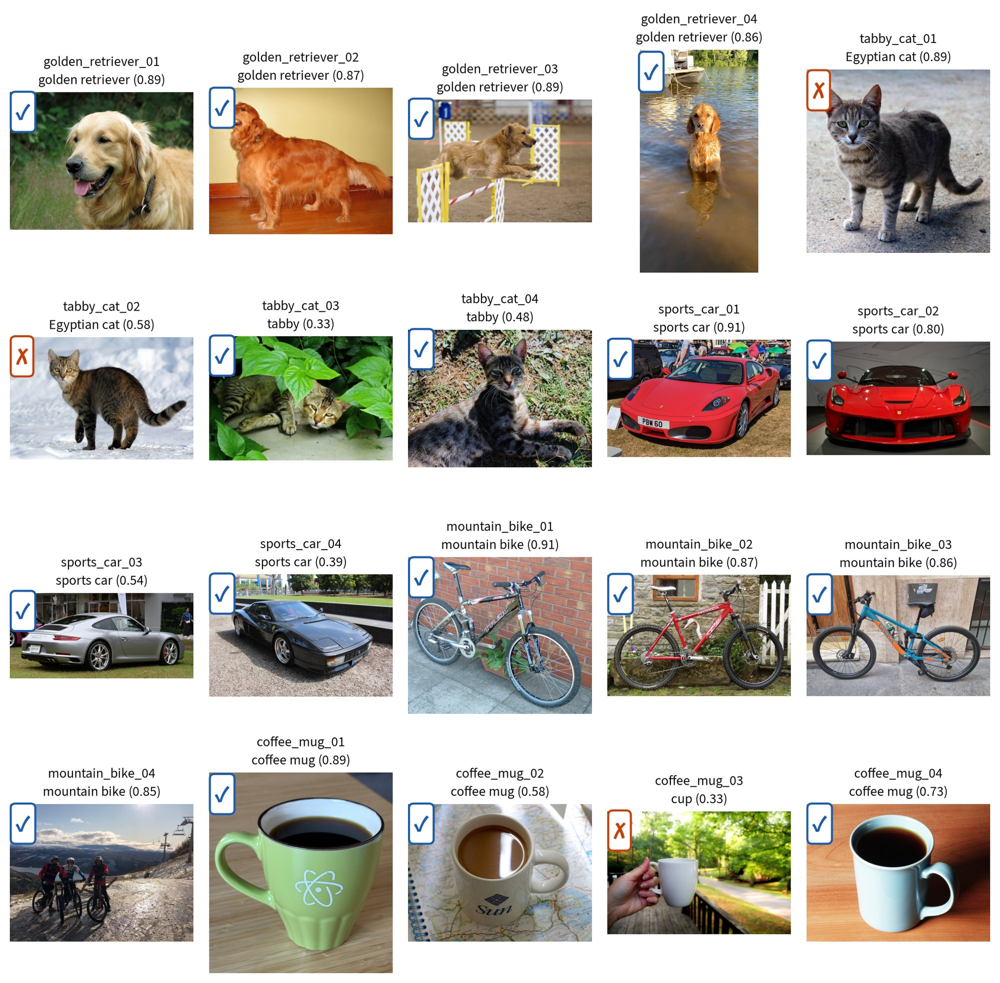

Successful, incorrect and uncertain examples
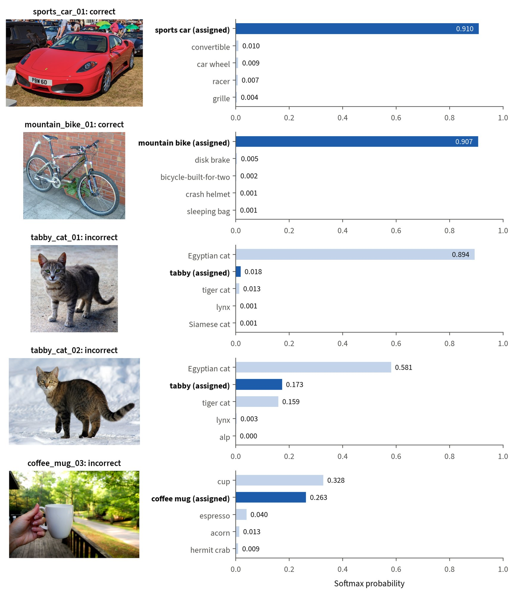

Successful predictions
sports_car_01(red Ferrari F430 at an outdoor car show) is predicted as sports car with probability 0.910. The next classes, convertible (0.010) and car wheel (0.009), are related car concepts.mountain_bike_01(full-suspension bike against a brick wall) gets mountain bike with 0.907, and the runner-up, disk brake (0.005), is a part you can see on the bike.- All four golden retrievers are correct (0.863–0.890), including
golden_retriever_04, where the dog is small and standing in a lake. Their second choices are other dog breeds (Irish setter for the dark-redgolden_retriever_02, and cocker spaniel forgolden_retriever_04).
Incorrect predictions
tabby_cat_01(grey striped cat on pavement) → Egyptian cat (0.894), and tabby is second with only 0.018.tabby_cat_02(brown tabby on snow) → Egyptian cat (0.581), with tabby at 0.173 and tiger cat at 0.159. The three ImageNet domestic cat classes together get 0.925 and 0.913. This shows the model does recognize a domestic cat, but it splits these overlapping coat-pattern classes differently than my labels do.coffee_mug_03(white mug held in a hand outdoors) → cup (0.328), with coffee mug close behind (0.263). These two classes mean almost the same thing.
Uncertain correct predictions
tabby_cat_03: tabby 0.335 vs. tiger cat 0.288, and the cat is partly hidden by leaves.sports_car_04: sports car 0.391 vs. convertible 0.263 (black Ferrari Testarossa).
What the fixed 1,000-class output cannot express
One thing I noticed is that the model can only answer with one of the 1,000 classes it was trained on. It can't describe a scene like "three riders with bikes on a mountain," it can't name a class it has never seen, and it can't answer "none of these." The softmax always spreads all of the probability over the same 1,000 classes, even when an image doesn't match any of them. Another issue is that ImageNet has a lot of classes that overlap, like tabby, tiger cat and Egyptian cat, or cup and coffee mug, or sports car, convertible and racer. All three errors in Figure 4 are between classes like these, so I think the unrestricted accuracy actually penalizes answers that a person might accept. If I wanted to ask about a different set of classes, the classification head would have to be retrained.
No probability goes above about 0.91. The documented training recipe for this checkpoint uses label smoothing (0.11) along with mixup and cutmix, and these discourage probabilities close to 1. So these values shouldn't be read as calibrated confidence.
6 CLIP similarity implementation and numerical verification
CLIP has two separate encoders, f for images and g for texts, and both map into the same 512-dimensional space. For N images and M candidate texts, I implemented:
where τ is the checkpoint's learned logit_scale and the softmax runs over the candidate texts k (the row maximum is subtracted before exponentiating so the calculation stays numerically stable).
| Step | Operation | Shape / value |
|---|---|---|
| 1 | Image embeddings from the image encoder | (20, 512), norms ≈ 10.5–11.3 |
| 2 | Text embeddings from the text encoder | (5, 512), norms ≈ 9.3–10.5 |
| 3–4 | L2 normalization of both | all norms equal 1 within 10−7 |
| 5 | Cosine similarity matrix S = UV⊤ | (20, 5), values 0.120–0.318 |
| 6 | Logits with the learned scale | τ = 4.6052, eτ = 100.0 |
| 7 | Softmax over the candidate texts | every row sums to 1 |
| 8 | Prediction: arg max over texts | one category per image |
Verification against CLIP's built-in output
clip.load keeps the checkpoint's native FP16 weights on the GPU. I compared my logits with logits_per_image from CLIP's own forward pass, and I always compared them within the same precision.
| Precision | Peak GPU memory | Max |manual − built-in| | Predictions identical |
|---|---|---|---|
| FP16 (native) | 381 MiB | 0.0156 | yes |
| FP32 | 652 MiB | 5.7×10−6 | yes |
In FP16 the difference is exactly one rounding step (FP16 numbers between 16 and 32 are 2−6 ≈ 0.0156 apart). This happens because CLIP multiplies the scale into the image features before the matrix product. FP16 and FP32 logits differ by at most 0.034 and they give the same predictions. Because FP32 fits easily in the 4 GiB GPU, I used FP32 for all the other CLIP experiments, and there the manual logits agree with the built-in logits within the tolerance I chose of 10−4. My softmax matches PyTorch's within 1.2×10−9, and the cached image embeddings are identical to freshly computed ones. The cache is keyed on the model, CLIP commit, precision, preprocessing and the checksum of every image, so any change makes it invalid.
7 Image–text similarity heatmap
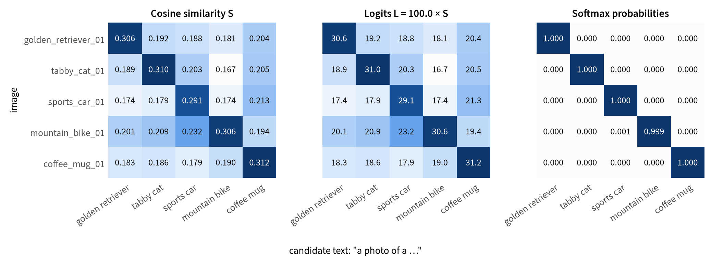

- Cosine similarity measures the angle between two unit vectors and is always in [−1, 1]. CLIP's image–text cosines are small (here 0.12–0.32), and the correct text is only ahead of the best wrong text by 0.06–0.14.
- Logits multiply the cosines by the learned constant eτ = 100. This keeps the ranking the same but stretches the gaps, so a cosine gap of 0.1 becomes a logit gap of 10.
- Softmax probabilities exponentiate and normalize the logits across the candidate texts in each row. A logit gap of 10 turns into a probability ratio of e10 ≈ 22,000, which is why the probabilities are almost exactly 0 or 1.
Why probabilities depend on the candidate texts
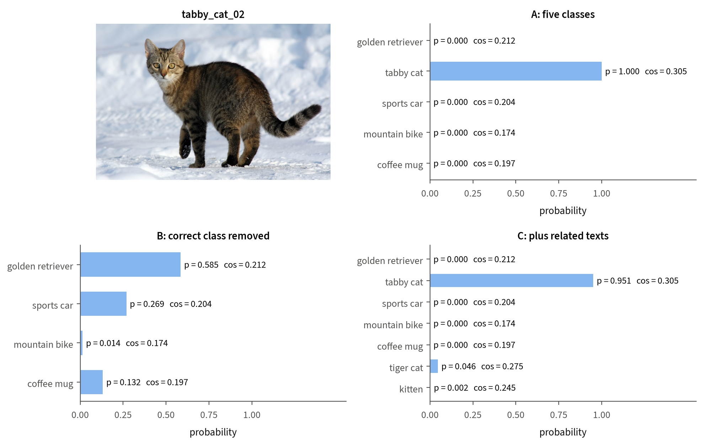
tabby_cat_02) scored against three candidate sets. The cosine similarity to each text is the same in every set, and only the probabilities change. Full-size image
The softmax normalizes over whatever texts it's given. With the five classes, tabby cat gets a probability of 0.9998. But when the correct text is removed, the softmax still has to spread all the probability over the wrong texts, and golden retriever gets 0.585 even though its cosine similarity (0.212) is a lot lower than the removed correct text (0.305). Adding tiger cat and kitten lowers tabby cat to 0.951, and most of that goes to tiger cat (0.046). This shows that a CLIP probability is relative to the candidate list, and it isn't an absolute measure of how well a text describes the image.
8 Prompt wording comparison
I classified all 20 images with three templates, always using the same candidate order (golden retriever, tabby cat, sports car, mountain bike, coffee mug). The image embeddings are only computed once, and the only thing that changes between templates is the five text embeddings.
| Template | Accuracy | Mean correct-class probability | Mean correct-class cosine | Mean logit margin | Min logit margin |
|---|---|---|---|---|---|
{category} | 100% (20/20) | 0.9994 | 0.279 | 8.88 | 5.93 |
a photo of a {category} | 100% (20/20) | 0.9998 | 0.294 | 9.63 | 7.38 |
an image showing a {category} | 100% (20/20) | 1.0000 | 0.305 | 11.11 | 8.55 |
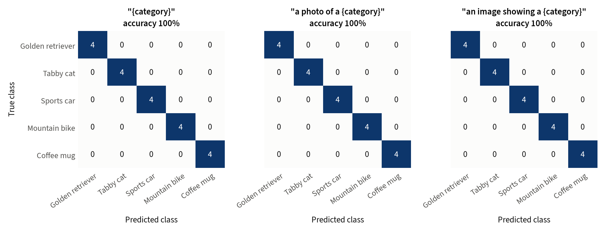

Changed predictions. There weren't any. The five classes look really different from each other, so every template classifies every image correctly.
Changed scores. The wording does change every score though. an image showing a {category} gives the largest margin for all 20 images, and the plain class name gives the smallest margin for 15 of the 20 (for the other five, a photo of a {category} is the lowest). The biggest margin changes are tabby_cat_02 (8.2 → 12.2), mountain_bike_03 (6.6 → 10.2) and tabby_cat_03 (7.1 → 10.7). Every margin is above 5.9, so the correct-class probability is above 0.997 everywhere, and the changes only show up in the third or fourth decimal (the largest is mountain_bike_01, 0.9971 → 0.9999). Another thing I noticed is that a higher correct-class cosine doesn't automatically mean a larger margin, because the template also moves the competing texts. For sports_car_02, a photo of a … gives the higher correct-class cosine, but an image showing a … gives the larger margin.
For CLIP, every image was classified correctly with all three templates, so I looked at its least confident cases through these logit margins instead.
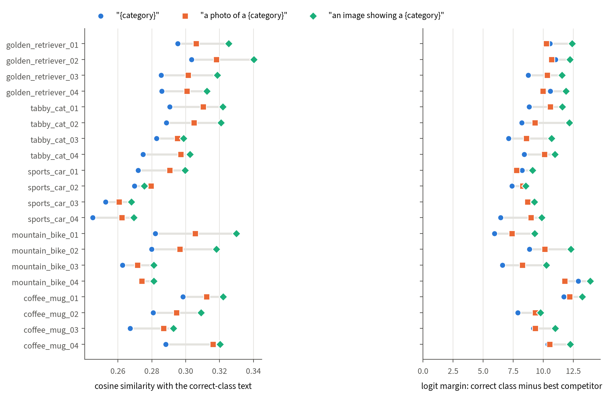

Supplementary: harder candidate list. When I added five distractors that are easy to confuse with my classes (Labrador retriever, Egyptian cat, convertible, road bike, cup), every template got 19/20 correct. The one error is the same for all three: mountain_bike_01 is labeled road bike (correct-class probability 0.18–0.28). Even here, the wording changed the confidence but not any prediction.
Why changing a prompt is not fine-tuning
All of CLIP's parameters stay frozen (no gradients, evaluation mode), and the image embeddings are the same for every template. Changing the template only changes the input text, which changes the five text vectors vj that basically act as the classifier weights. Fine-tuning is different because it would update the model's parameters with gradient descent on labeled data, which permanently changes the encoders.
9 Image–image representation space
Using the normalized CLIP image embeddings U, the image–image cosine similarity matrix is
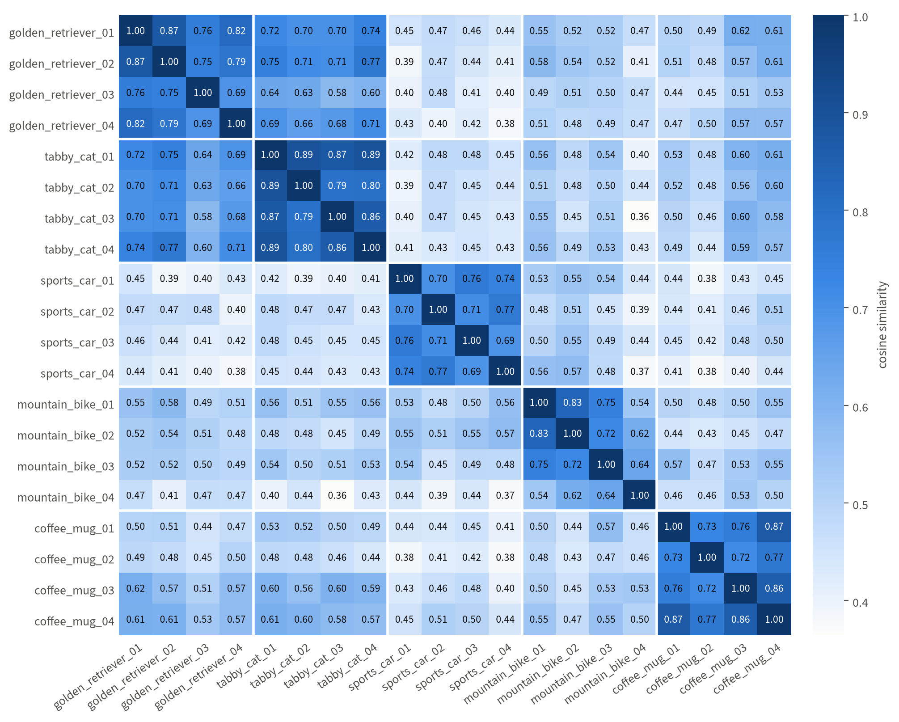

| Class | Golden retriever | Tabby cat | Sports car | Mountain bike | Coffee mug |
|---|---|---|---|---|---|
| Golden retriever | 0.779 | 0.686 | 0.428 | 0.503 | 0.526 |
| Tabby cat | 0.686 | 0.853 | 0.443 | 0.487 | 0.538 |
| Sports car | 0.428 | 0.443 | 0.730 | 0.491 | 0.438 |
| Mountain bike | 0.503 | 0.487 | 0.491 | 0.684 | 0.495 |
| Coffee mug | 0.526 | 0.538 | 0.438 | 0.495 | 0.784 |
Grouping by class. Every image's nearest neighbor is in its own class (20/20). The mean within-class similarity is 0.766 (range 0.539–0.894, 30 pairs), and the mean between-class similarity is 0.503 (range 0.365–0.771, 160 pairs).
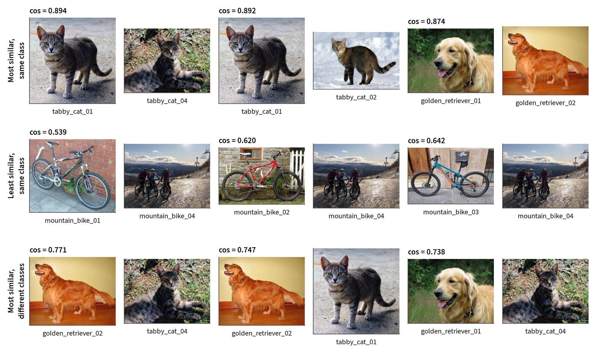

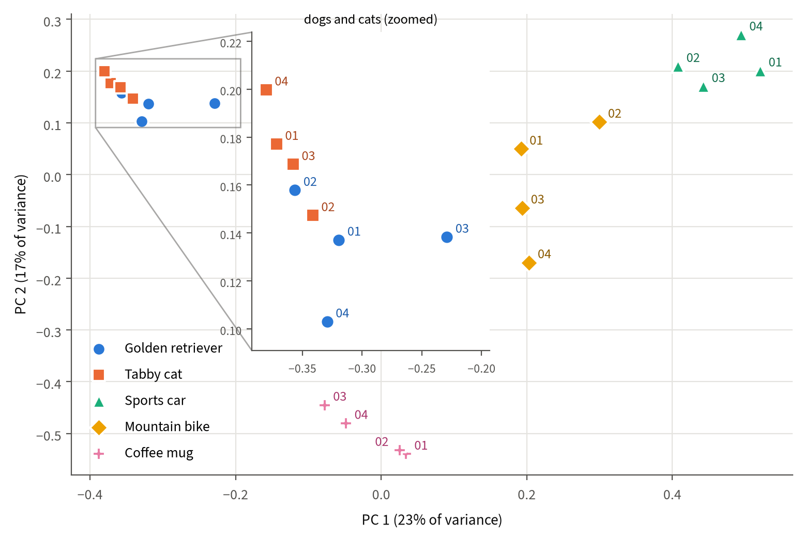

Interpretation
Similar images within a category. The most similar pairs are tabby cats: tabby_cat_01–tabby_cat_04 (0.894) and tabby_cat_01–tabby_cat_02 (0.892). Their backgrounds are different (pavement, grass, snow), but each one shows a striped cat facing the camera and filling a lot of the frame. For the mugs, the two close-ups of a mug of black coffee on a wooden table (coffee_mug_01, coffee_mug_04) are the most similar pair (0.873). I think this shows that a similar composition and setting also raise the similarity.
Dissimilar images within a category. mountain_bike_04 is the outlier in its class (mean 0.600 with the other bikes, and 0.539 with mountain_bike_01). The other bike photos each show a single parked bike, but this one shows three riders in protective gear on a mountain road with a chairlift and a wide landscape. golden_retriever_03 (an agility jump in an arena) is also the least typical dog (mean 0.733).
Unexpectedly similar images across categories. The five most similar cross-class pairs are all dog–cat pairs, and the top one is golden_retriever_02–tabby_cat_04 (0.771). The mean dog–cat similarity (0.686) is about as high as the mean similarity inside the mountain bike class (0.684). That pair doesn't share color (an orange dog on a red floor against a yellow wall, and a grey striped cat on grass) or background, so I think the similarity is better explained by both images showing a furry pet animal. Sports cars are the most isolated class (mean 0.44–0.46 to the other classes), and their most similar non-car image is always mountain_bike_02 (up to 0.573), which fits with a broad "vehicle" grouping.
What the representation captures. In these examples, the embedding mainly reflects the category of the main object, and also broader groups like animals vs. vehicles. It also reflects scene content and composition (the mountain scene with multiple people, and the matching close-up mug photos). I didn't find any evidence that color dominates. A lot of the high-similarity pairs are different colors, and the red Ferrari F430 and the red-orange dog photo only have a similarity of 0.39. There are only 30 within-class pairs, and the object, background and composition all vary together in these photos, so their separate effects can't be isolated. Cosine values also don't have an absolute meaning (even unrelated images here score at least 0.36), so only comparisons between them are informative.
10 Model comparison and limitations
| Model | Decision among | Accuracy |
|---|---|---|
| ViT-B/16 | 1,000 ImageNet classes (primary) | 85% |
| ViT-B/16 | 5 classes, restricted (supplementary) | 100% |
| CLIP ViT-B/32 | 5 candidate texts, each of the three templates | 100% |
| CLIP ViT-B/32 | 10 candidate texts incl. distractors (supplementary), each template | 95% |
- Different questions. ViT chooses between 1,000 classes, but CLIP chooses between five texts that I wrote. When ViT is also restricted to the five classes, it gets all 20 images correct too.
- Training objectives. ViT learns to map an image to one of 1,000 fixed labels using cross-entropy. CLIP learns with a contrastive loss to put matching images and captions close together in a shared space, which means new classes can be written as text at test time without changing any weights.
- Training data. ViT was trained on ImageNet-1k (≈1.28 M images with human labels), and CLIP was trained on 400 M image–text pairs collected from the internet. CLIP's training data is a lot bigger, less curated and not public, so I can't check whether it overlaps with my test images.
- Candidate-label sets. ViT's errors (Egyptian cat, cup) are ImageNet classes that just aren't in CLIP's five-candidate list, so I think part of what looks like CLIP's advantage here comes from the smaller candidate set that I chose. In the supplementary 10-candidate test, CLIP picked tabby cat over Egyptian cat for all four cats. But whether this is because of the models or because of the difference between ImageNet's class definitions and everyday usage can't be decided from 20 images.
- Architecture. ViT-B/16 sees 196 patch tokens of 16×16 pixels, while CLIP ViT-B/32 sees 49 patch tokens of 32×32 pixels.
- Small dataset. With 20 images, one image is worth 5 percentage points, and four images per class can't represent all the variation inside a class. These results only describe these 20 photographs, and they don't show that either model is generally better.
- Selection and preprocessing. Wikimedia Commons photos are usually well lit and centered, which probably makes the task easier than everyday photos, and some of them might even be in the models' training data. Both models only see the center crop. ViT probabilities are affected by label smoothing and CLIP probabilities by the candidate list, so neither one is a calibrated confidence.
11 Conclusion
Overall, a ViT turns a 224×224 image into 196 patch tokens plus a learned CLS token. My manually extracted patches, multiplied by the model's learned projection, reproduce its patch embeddings, and its learned positional embeddings encode the 2-D patch grid. On 20 images from five ImageNet classes, ViT-B/16 got 85% top-1 accuracy over all 1,000 classes, and all three errors were between overlapping ImageNet categories. For CLIP, my step-by-step implementation of normalization, cosine similarity, learned scaling and softmax matches the built-in output within 5.7×10−6 in FP32. All three prompt templates classified every image correctly. The wording didn't change any prediction, but it consistently changed the logit margins, and an image showing a {category} gave the largest margin for every image. CLIP's image embeddings group the photos by class and by broader concepts like animals and vehicles, and they're also sensitive to scene content and composition. These observations are limited to a small, hand-picked set of photographs, so they shouldn't be generalized into a ranking of the two models.
12 References, image attribution and reproducibility
References
- A. Dosovitskiy et al. “An Image is Worth 16x16 Words: Transformers for Image Recognition at Scale.” ICLR, 2021.
- A. Radford et al. “Learning Transferable Visual Models From Natural Language Supervision.” ICML, 2021.
- O. Russakovsky et al. “ImageNet Large Scale Visual Recognition Challenge.” IJCV, 2015.
- TorchVision,
vit_b_16model documentation and training recipe: pytorch.org/vision, github.com/pytorch/vision. - OpenAI CLIP: github.com/openai/CLIP (commit
d05afc4).
Image attribution
All the photographs are from Wikimedia Commons. In the figures they are resized and center-cropped or arranged in grids, and each photograph is still under its original license.


.jpg){kind=link}


.jpg){kind=link}

Reproducibility
- The experiments only use fixed public checkpoints in evaluation mode. Inference is deterministic for fixed weights and inputs, and re-running the full pipeline gave identical predictions.
- All library versions are pinned in a lock file, and the environment is listed in Section 3.
- Image integrity is checked against the recorded SHA-256 checksums before every experiment.
- CLIP image embeddings are cached with a key that includes the model, precision, preprocessing and image checksums.
- Automated tests (32, all passing) cover patch extraction, metrics, the CLIP calculation on synthetic tensors, and integration checks against both real checkpoints.
- The implementation is submitted privately with the course submission, and I intentionally didn't publish it on this site.